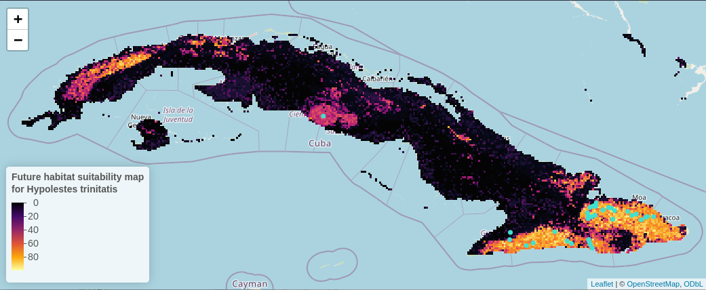

Case study - Cuba
Processing of spatial data before and after a Species Distribution Model
2023-10-31
Source:vignettes/case_study_cuba.Rmd
case_study_cuba.RmdIntroduction
The following example showcases the functionality of the hydrographr package along a species distribution modelling (SDM) workflow. We will use an SDM to predict the suitable habitats of a dragonfly species in Cuba. We will start by defining the regular tiles of the Hydrography90m (Amatulli et al., 2022) where the occurrence points of the species are located. Afterwards we will download the Hydrography90m and CHELSA Bioclim (Karger & Zimmermann, 2019) layers of the predictor variables, crop them and merge them, if necessary. Then, we will aggregate the variable values within each sub-catchment of the study area, keeping as predictors their mean and SD per sub-catchment. Using the random forest (RF) algorithm, we will build a simple SDM and predict where the species could potentially occur. Finally, we will reclassify the layer of all the sub-catchments in the study area, creating a habitat suitability map.
Hypolestes trinitatis is a damselfly species endemic to Cuba. The species inhabits rivers and streams located in forest areas at the main mountain ranges of eastern and central Cuba. The presence of riparian forests as well as clean and well oxygenated water seems to be important ecological conditions required by H. trinitatis. Larvae can be found clinging to boulders and cobbles in the river bed at fast-flowing water stream segments and pre-reproductive adults of both sexes and sexually mature females remain most of the time in the vegetation of the riparian forest where they find shelter and prey.
Let’s get started!
Load required libraries
library(hydrographr)
library(data.table)
library(dplyr)
library(terra)
library(tools)
library(stringr)
library(ranger)
library(leaflet)
library(leafem)Define working directory
# Define the "data_cuba" directory, where you have downloaded all the data,
# as the working directory
wdir <- "my/working/directory/data_cuba"
setwd(wdir)
# Create a new folder in the working directory to store all the data
dir.create("data")Species data
We will start by downloading a dataset including aquatic insect occurrence records in Cuba from https://doi.org/10.18728/igb-fred-778.3 (Cambas & Salina, 2022).
download.file("https://fred.igb-berlin.de/data/file_download/1395",
destfile = paste0(wdir, "/data/spdata_cuba.csv"), mode = "wb")Import the dataset and select the occurrences of the species of interest, sampled after the year 1980 (to match with the climate data)
spdata <- fread(paste0(wdir, "/data/spdata_cuba.csv"), sep = "\t", fill = TRUE) %>%
filter(species == "Hypolestes_trinitatis") %>%
filter(year > 1980)Subset columns
spdata| occurrence_ID | species | longitude | latitude | year |
|---|---|---|---|---|
| 107705340 | Hypolestes_trinitatis | -75.73 | 20.01 | 2006 |
| 107705519 | Hypolestes_trinitatis | -75.37 | 20.40 | 2003 |
| 107705533 | Hypolestes_trinitatis | -75.78 | 20.50 | 1998 |
| 107705535 | Hypolestes_trinitatis | -77.03 | 20.20 | 1998 |
| 107705546 | Hypolestes_trinitatis | -74.81 | 20.44 | 2008 |
| 107705657 | Hypolestes_trinitatis | -75.76 | 20.09 | 2012 |
| 107705727 | Hypolestes_trinitatis | -80.06 | 21.96 | 2015 |
| 107705733 | Hypolestes_trinitatis | -76.04 | 20.03 | 2011 |
| 107705744 | Hypolestes_trinitatis | -74.71 | 20.44 | 2004 |
| 107705863 | Hypolestes_trinitatis | -75.76 | 20.09 | 2004 |
| 107706093 | Hypolestes_trinitatis | -76.77 | 20.00 | 1996 |
| 107706107 | Hypolestes_trinitatis | -75.44 | 20.58 | 2001 |
| 107706146 | Hypolestes_trinitatis | -75.34 | 20.53 | 2001 |
| 107706216 | Hypolestes_trinitatis | -75.44 | 20.58 | 2001 |
| 107706217 | Hypolestes_trinitatis | -75.53 | 20.54 | 2001 |
| 107706218 | Hypolestes_trinitatis | -75.53 | 20.54 | 2001 |
| 107706240 | Hypolestes_trinitatis | -76.31 | 20.21 | 2003 |
| 107706332 | Hypolestes_trinitatis | -75.77 | 20.41 | 2001 |
| 107706355 | Hypolestes_trinitatis | -75.66 | 20.61 | 2001 |
| 107706359 | Hypolestes_trinitatis | -75.66 | 20.46 | 2001 |
| 107706363 | Hypolestes_trinitatis | -75.74 | 20.58 | 2000 |
| 107706366 | Hypolestes_trinitatis | -75.65 | 20.60 | 2001 |
| 107706369 | Hypolestes_trinitatis | -75.64 | 20.65 | 2000 |
| 107706370 | Hypolestes_trinitatis | -75.69 | 20.60 | 1999 |
| 107706375 | Hypolestes_trinitatis | -75.71 | 20.44 | 2000 |
| 107706378 | Hypolestes_trinitatis | -75.77 | 20.45 | 1999 |
| 107706384 | Hypolestes_trinitatis | -75.65 | 20.60 | 2001 |
| 107706385 | Hypolestes_trinitatis | -75.65 | 20.60 | 2001 |
| 107706386 | Hypolestes_trinitatis | -75.66 | 20.46 | 2000 |
| 107706387 | Hypolestes_trinitatis | -75.66 | 20.46 | 2001 |
| 107706388 | Hypolestes_trinitatis | -75.77 | 20.45 | 1999 |
| 107706420 | Hypolestes_trinitatis | -76.11 | 20.07 | 2005 |
| 107706436 | Hypolestes_trinitatis | -74.84 | 20.43 | 1998 |
| 107706561 | Hypolestes_trinitatis | -75.37 | 20.40 | 2004 |
| 107706589 | Hypolestes_trinitatis | -77.04 | 20.09 | 1998 |
| 107706709 | Hypolestes_trinitatis | -74.99 | 20.48 | 2003 |
| 107706715 | Hypolestes_trinitatis | -75.39 | 20.57 | 2004 |
| 107706720 | Hypolestes_trinitatis | -76.66 | 20.04 | 2004 |
| 107706807 | Hypolestes_trinitatis | -75.06 | 20.46 | 2003 |
| 107706909 | Hypolestes_trinitatis | -75.70 | 19.96 | 2001 |
| 107706916 | Hypolestes_trinitatis | -75.75 | 20.05 | 1996 |
| 107706937 | Hypolestes_trinitatis | -74.91 | 20.39 | 2003 |
| 107706938 | Hypolestes_trinitatis | -75.13 | 20.52 | 2003 |
Let’s visualise the species occurrences on the map
# Convert species data to a spatial vector object to plot the points
spdata_vect <- vect(spdata, geom=c("longitude", "latitude"))Let’s define the extent (bounding box) of the study area (xmin, ymin, xmax, ymax)
bbox <- c(-84.9749110583, 19.8554808619, -74.1780248685, 23.1886107447)
m <- leaflet() %>%
addProviderTiles('Esri.WorldShadedRelief') %>%
setMaxBounds(bbox[1], bbox[2], bbox[3], bbox[4]) %>%
addCircles(data = spdata_vect, color = "purple") # data = spdata
m
Download files
In order to download layers of the Hydrography90m, we need to know the IDs of the 20°x20° tiles in which they are located. We can obtain these IDs using the function get_tile_id(). This function downloads and uses the auxiliary raster file that contains all the regional units globally, and thus requires an active internet connection.
tile_id <- get_tile_id(data = spdata, lon = "longitude", lat = "latitude")
tile_id## [1] "h08v06" "h10v04" "h10v06"Currently the function returns all the tiles of the regional unit where the input points are located. However, some of them may be far from the study area and hence not always needed in further steps. Please double check which tile IDs are relevant for your purpose using the Tile map found here.
In our case, Cuba spreads across two tiles, which hold the IDs “h08v06” and “h10v06”, so we will keep only these two.
tile_id <- tile_id[c(1,3)]Let’s define the Hydrography90m variables that we would like to download. We will use the variables slope_curv_max_dw_cel (maximum curvature between the highest upstream, focal and downstream cell) and spi (Stream Power Index) and stream length as predictors in our model.
Additionally, we will download the sub_catchment layer, which is the necessary base-layer for the workflow.
A list of all available Hydrography90m variables, as well as details and visualisations are available here.
# Variables in raster format
vars_tif <- c("sub_catchment", "slope_curv_max_dw_cel", "spi")
# Variables in vector format. This layerholds the information on stream length
vars_gpkg <- c("order_vect_point")
# Download the .tif tiles of the desired variables
download_tiles(variable = vars_tif, tile_id = tile_id, file_format = "tif",
download_dir = "data")
# Download the .gpkg tiles of the desired variables
download_tiles(variable = vars_gpkg, tile_id = tile_id, file_format = "gpkg",
download_dir = "data")Then download the CHELSA present and future Bioclim variables
For a quick outlook on the bioclimatic variables you can have a look here.
# Create download directory
dir.create(paste0(wdir, "/data/chelsa_bioclim"))
# Extend timeout to 1000s to allow uninterrupted downloading
options(timeout = 1000)
# Download
# Present, 1981-2010
download.file("https://os.zhdk.cloud.switch.ch/envicloud/chelsa/chelsa_V2/GLOBAL/climatologies/1981-2010/bio/CHELSA_bio12_1981-2010_V.2.1.tif",
destfile = "data/chelsa_bioclim/bio12_1981-2010.tif", mode = "wb")
download.file("https://os.zhdk.cloud.switch.ch/envicloud/chelsa/chelsa_V2/GLOBAL/climatologies/1981-2010/bio/CHELSA_bio15_1981-2010_V.2.1.tif",
destfile = "data/chelsa_bioclim/bio15_1981-2010.tif", mode = "wb")
download.file("https://os.zhdk.cloud.switch.ch/envicloud/chelsa/chelsa_V2/GLOBAL/climatologies/1981-2010/bio/CHELSA_bio1_1981-2010_V.2.1.tif",
destfile = "data/chelsa_bioclim/bio1_1981-2010.tif", mode = "wb")
# Future, 2041-2070
download.file("https://os.zhdk.cloud.switch.ch/envicloud/chelsa/chelsa_V2/GLOBAL/climatologies/2041-2070/IPSL-CM6A-LR/ssp370/bio/CHELSA_bio12_2041-2070_ipsl-cm6a-lr_ssp370_V.2.1.tif",
destfile = "data/chelsa_bioclim/bio12_IPSL-CM6A-LR_ssp370_2041-2070.tif", mode = "wb")
download.file("https://os.zhdk.cloud.switch.ch/envicloud/chelsa/chelsa_V2/GLOBAL/climatologies/2041-2070/IPSL-CM6A-LR/ssp370/bio/CHELSA_bio15_2041-2070_ipsl-cm6a-lr_ssp370_V.2.1.tif",
destfile = "data/chelsa_bioclim/bio15_IPSL-CM6A-LR_ssp370_2041-2070.tif", mode = "wb")
download.file("https://os.zhdk.cloud.switch.ch/envicloud/chelsa/chelsa_V2/GLOBAL/climatologies/2041-2070/IPSL-CM6A-LR/ssp370/bio/CHELSA_bio1_2041-2070_ipsl-cm6a-lr_ssp370_V.2.1.tif",
destfile = "data/chelsa_bioclim/bio1_IPSL-CM6A-LR_ssp370_2041-2070.tif", mode = "wb")Cropping
After having downloaded all the layers, we need to crop them to the extent of our study area. This is straightforward in the case of the global CHELSA layers:
We define the directory containing the layers to be cropped
dirs_chelsa <- paste0(wdir, "/data/chelsa_bioclim")… and the final output directory
# Define output directory for merged files
layer_dir <- paste0(wdir, "/data/final_layers")
# Create the directory
dir.create(layer_dir)We then crop the files using the function crop_to_extent() in a loop
files_chelsa <- list.files(dirs_chelsa, pattern = ".tif", full.names = TRUE)
for(ifile in files_chelsa) {
crop_to_extent(
raster_layer = ifile,
bounding_box = bbox,
out_dir = layer_dir,
file_name = basename(ifile),
read = FALSE,
quiet = TRUE)
}However, the hydrographic variable slope_curv_max_dw_cel (the maximum curvature between the highest upstream, the focal, and the downstream cell) is split across two tiles. We highly recommend to first crop the tiles to the extent of the study area to limit their size, and afterwards merge them into one file.
Again, we will first define the input directories, but this time we will store the cropped files in the same directory as the input files, as there is an extra step before reaching to the final output.
dirs_h90m <- list.dirs(paste0(wdir, "/data"),
recursive = TRUE, full.names = TRUE)
dirs_h90m <- dirs_h90m[grep("tiles20d", dirs_h90m)]
for(idir in dirs_h90m) {
# only choose rasters
tiles <- list.files(idir, pattern = ".tif$", full.names = TRUE)
for(itile in tiles) {
crop_to_extent(
raster_layer = itile,
bounding_box = bbox,
out_dir = idir,
file_name = paste0(str_remove(basename(itile), ".tif"), "_crop.tif"),
read = FALSE,
quiet = TRUE)
}
}Merging
The cropped tiles of the variable now need to be merged together.
# This can be done sequentially:
idir <- dirs_h90m[1]
merge_tiles(tile_dir = idir,
tile_names = list.files(idir, full.names = FALSE,
pattern = "_crop.tif"),
out_dir = layer_dir,
file_name = "spi.tif",
read = FALSE)
idir <- dirs_h90m[3]
merge_tiles(tile_dir = idir,
tile_names = list.files(idir, full.names = FALSE,
pattern = "_crop.tif"),
out_dir = layer_dir,
file_name = "slope_curv_max_dw_cel.tif",
read = FALSE)
idir <- dirs_h90m[4]
merge_tiles(tile_dir = idir,
tile_names = list.files(idir, full.names = FALSE,
pattern = "_crop.tif"),
out_dir = layer_dir,
file_name = "sub_catchment.tif",
read = FALSE)
# ...or in a loop
for(idir in dirs_h90m[c(1,3,4)]) {
# Get input file extension
file_extension <- file_ext(list.files(idir, full.names = FALSE)[1])
# Assign file extension to output files
ivar_name <- paste0(
str_remove(basename(idir), "_tiles20d"), ".", file_extension
)
# Run the function
merge_tiles(tile_dir = idir,
tile_names = list.files(idir, full.names = FALSE,
pattern = "_crop.tif"),
out_dir = layer_dir,
file_name = ivar_name,
read = FALSE,
bigtiff = TRUE)
}Extraction of sub-catchment IDs
Extract the IDs of the sub-catchments where the points are located. This step is crucial, as many of the functions that we will later use require a vector of sub-catchment IDs as input. Note that the function extract_ids() can be used to extract the values at specific points of any raster file provided to the argument subc_layer. It can be safely used to query very large raster files, as these are not loaded into R.
spdata_ids <- extract_ids(data = spdata, lon = "longitude", lat = "latitude",
id = "occurrence_ID", quiet = FALSE,
subc_layer = paste0(layer_dir, "/sub_catchment.tif"))| longitude | latitude | occurrence_ID | subcatchment_id |
|---|---|---|---|
| -75.73 | 20.01 | 107705340 | 422886180 |
| -75.37 | 20.40 | 107705519 | 422816272 |
| -75.78 | 20.50 | 107705533 | 422801107 |
| -77.03 | 20.20 | 107705535 | 422851157 |
| -74.81 | 20.44 | 107705546 | 422809465 |
| -75.76 | 20.09 | 107705657 | 422872031 |
Aggregation of environmental layers
We will calculate the zonal statistics of the Hydrography90m and the CHELSA Bioclim variables for all the sub-catchments of the study area. Caution, don’t increase the number of cores to more than 3 as this can cause memory problems. However, this highly depends to the number of sub-catchments as well. We recommend to test the function with different parameters to find out what works best for your case.
# Define input var_layers for the extract_zonal_stat() function
var_layers <- list.files(layer_dir)[-9]
# var_layers <- list.files(layer_dir)[c(3,5,7)]
var_layers
## [1] "bio1_1981-2010.tif"
## [2] "bio1_IPSL-CM6A-LR_ssp370_2041-2070.tif"
## [3] "bio12_1981-2010.tif"
## [4] "bio12_IPSL-CM6A-LR_ssp370_2041-2070.tif"
## [5] "bio15_1981-2010.tif"
## [6] "bio15_IPSL-CM6A-LR_ssp370_2041-2070.tif"
## [7] "slope_curv_max_dw_cel.tif"
## [8] "spi.tif"A good practice before aggregating the variables is to check their NoData values:
report_no_data(data_dir = layer_dir, var_layer = var_layers)
## Raster NoData
## 1 bio15_1981-2010.tif 0
## 2 bio1_1981-2010.tif 0
## 3 bio1_IPSL-CM6A-LR_ssp370_2041-2070.tif 0
## 4 bio12_1981-2010.tif 0
## 5 bio12_IPSL-CM6A-LR_ssp370_2041-2070.tif 0
## 6 bio15_IPSL-CM6A-LR_ssp370_2041-2070.tif 0
## 7 slope_curv_max_dw_cel.tif -9999999
## 8 spi.tif -9999999
# Run the function that returns the zonal statistics
stats_table_zon <- extract_zonal_stat(
data_dir = layer_dir,
subc_layer = paste0(layer_dir, "/sub_catchment.tif"),
subc_id = "all",
var_layer = var_layers,
out_dir = paste0(wdir, "/data"),
file_name = "zonal_stats.csv",
n_cores = 2)The function also reports the NoData values that are used in the calculation of the zonal statistics of each variable.
Let’s inspect the resulting table
| subc_id | bio1_1981.2010_data_cells | bio1_1981.2010_nodata_cells | bio1_1981.2010_min | bio1_1981.2010_max | bio1_1981.2010_range | bio1_1981.2010_mean | bio1_1981.2010_mean_abs | bio1_1981.2010_sd | bio1_1981.2010_var | bio1_1981.2010_cv | bio1_1981.2010_sum | bio1_1981.2010_sum_abs | bio1_IPSL.CM6A.LR_ssp370_2041.2070_data_cells | bio1_IPSL.CM6A.LR_ssp370_2041.2070_nodata_cells | bio1_IPSL.CM6A.LR_ssp370_2041.2070_min | bio1_IPSL.CM6A.LR_ssp370_2041.2070_max | bio1_IPSL.CM6A.LR_ssp370_2041.2070_range | bio1_IPSL.CM6A.LR_ssp370_2041.2070_mean | bio1_IPSL.CM6A.LR_ssp370_2041.2070_mean_abs | bio1_IPSL.CM6A.LR_ssp370_2041.2070_sd | bio1_IPSL.CM6A.LR_ssp370_2041.2070_var | bio1_IPSL.CM6A.LR_ssp370_2041.2070_cv | bio1_IPSL.CM6A.LR_ssp370_2041.2070_sum | bio1_IPSL.CM6A.LR_ssp370_2041.2070_sum_abs | bio12_1981.2010_data_cells | bio12_1981.2010_nodata_cells | bio12_1981.2010_min | bio12_1981.2010_max | bio12_1981.2010_range | bio12_1981.2010_mean | bio12_1981.2010_mean_abs | bio12_1981.2010_sd | bio12_1981.2010_var | bio12_1981.2010_cv | bio12_1981.2010_sum | bio12_1981.2010_sum_abs | bio12_IPSL.CM6A.LR_ssp370_2041.2070_data_cells | bio12_IPSL.CM6A.LR_ssp370_2041.2070_nodata_cells | bio12_IPSL.CM6A.LR_ssp370_2041.2070_min | bio12_IPSL.CM6A.LR_ssp370_2041.2070_max | bio12_IPSL.CM6A.LR_ssp370_2041.2070_range | bio12_IPSL.CM6A.LR_ssp370_2041.2070_mean | bio12_IPSL.CM6A.LR_ssp370_2041.2070_mean_abs | bio12_IPSL.CM6A.LR_ssp370_2041.2070_sd | bio12_IPSL.CM6A.LR_ssp370_2041.2070_var | bio12_IPSL.CM6A.LR_ssp370_2041.2070_cv | bio12_IPSL.CM6A.LR_ssp370_2041.2070_sum | bio12_IPSL.CM6A.LR_ssp370_2041.2070_sum_abs | bio15_1981.2010_data_cells | bio15_1981.2010_nodata_cells | bio15_1981.2010_min | bio15_1981.2010_max | bio15_1981.2010_range | bio15_1981.2010_mean | bio15_1981.2010_mean_abs | bio15_1981.2010_sd | bio15_1981.2010_var | bio15_1981.2010_cv | bio15_1981.2010_sum | bio15_1981.2010_sum_abs | bio15_IPSL.CM6A.LR_ssp370_2041.2070_data_cells | bio15_IPSL.CM6A.LR_ssp370_2041.2070_nodata_cells | bio15_IPSL.CM6A.LR_ssp370_2041.2070_min | bio15_IPSL.CM6A.LR_ssp370_2041.2070_max | bio15_IPSL.CM6A.LR_ssp370_2041.2070_range | bio15_IPSL.CM6A.LR_ssp370_2041.2070_mean | bio15_IPSL.CM6A.LR_ssp370_2041.2070_mean_abs | bio15_IPSL.CM6A.LR_ssp370_2041.2070_sd | bio15_IPSL.CM6A.LR_ssp370_2041.2070_var | bio15_IPSL.CM6A.LR_ssp370_2041.2070_cv | bio15_IPSL.CM6A.LR_ssp370_2041.2070_sum | bio15_IPSL.CM6A.LR_ssp370_2041.2070_sum_abs | slope_curv_max_dw_cel_data_cells | slope_curv_max_dw_cel_nodata_cells | slope_curv_max_dw_cel_min | slope_curv_max_dw_cel_max | slope_curv_max_dw_cel_range | slope_curv_max_dw_cel_mean | slope_curv_max_dw_cel_mean_abs | slope_curv_max_dw_cel_sd | slope_curv_max_dw_cel_var | slope_curv_max_dw_cel_cv | slope_curv_max_dw_cel_sum | slope_curv_max_dw_cel_sum_abs | spi_data_cells | spi_nodata_cells | spi_min | spi_max | spi_range | spi_mean | spi_mean_abs | spi_sd | spi_var | spi_cv | spi_sum | spi_sum_abs |
|---|---|---|---|---|---|---|---|---|---|---|---|---|---|---|---|---|---|---|---|---|---|---|---|---|---|---|---|---|---|---|---|---|---|---|---|---|---|---|---|---|---|---|---|---|---|---|---|---|---|---|---|---|---|---|---|---|---|---|---|---|---|---|---|---|---|---|---|---|---|---|---|---|---|---|---|---|---|---|---|---|---|---|---|---|---|---|---|---|---|---|---|---|---|---|---|---|
| 399592461 | 355 | 0 | 2986 | 2986 | 0 | 2986 | 2986 | 0 | 0 | 0 | 1060030 | 1060030 | 355 | 0 | 3005 | 3005 | 0 | 3005 | 3005 | 0 | 0 | 0 | 1066775 | 1066775 | 355 | 0 | 11031 | 11084 | 53 | 11050.04 | 11050.04 | 17.799709 | 316.82964 | 0.1610828 | 3922763 | 3922763 | 355 | 0 | 10532 | 10575 | 43 | 10546.23 | 10546.23 | 13.81320 | 190.80449 | 0.1309776 | 3743913 | 3743913 | 355 | 0 | 414 | 416 | 2 | 414.7380 | 414.7380 | 0.9650755 | 0.9313708 | 0.2326952 | 147232 | 147232 | 355 | 0 | 373 | 375 | 2 | 374.0225 | 374.0225 | 0.6230767 | 0.3882246 | 0.1665880 | 132778 | 132778 | 354 | 1 | -54884 | 30865 | 85749 | -2472.034 | 5752.051 | 12038.554 | 144926775 | -486.9898 | -875100 | 2036226 | 354 | 1 | 0 | 44 | 44 | 6.655367 | 6.655367 | 9.411190 | 88.570494 | 141.40752 | 2356 | 2356 |
| 399592865 | 82 | 0 | 2986 | 2986 | 0 | 2986 | 2986 | 0 | 0 | 0 | 244852 | 244852 | 82 | 0 | 3005 | 3005 | 0 | 3005 | 3005 | 0 | 0 | 0 | 246410 | 246410 | 82 | 0 | 11042 | 11084 | 42 | 11049.17 | 11049.17 | 9.880758 | 97.62939 | 0.0894253 | 906032 | 906032 | 82 | 0 | 10540 | 10575 | 35 | 10545.72 | 10545.72 | 8.19023 | 67.07986 | 0.0776640 | 864749 | 864749 | 82 | 0 | 414 | 416 | 2 | 414.1220 | 414.1220 | 0.4785711 | 0.2290303 | 0.1155629 | 33958 | 33958 | 82 | 0 | 373 | 374 | 1 | 373.0610 | 373.0610 | 0.2392856 | 0.0572576 | 0.0641411 | 30591 | 30591 | 81 | 1 | -40084 | 18444 | 58528 | -3907.630 | 7527.259 | 12947.641 | 167641415 | -331.3426 | -316518 | 609708 | 81 | 1 | 0 | 70 | 70 | 8.925926 | 8.925926 | 13.105251 | 171.747600 | 146.82231 | 723 | 723 |
| 399593700 | 148 | 0 | 2986 | 2986 | 0 | 2986 | 2986 | 0 | 0 | 0 | 441928 | 441928 | 148 | 0 | 3005 | 3005 | 0 | 3005 | 3005 | 0 | 0 | 0 | 444740 | 444740 | 148 | 0 | 11008 | 11054 | 46 | 11019.70 | 11019.70 | 14.048015 | 197.34674 | 0.1274810 | 1630915 | 1630915 | 148 | 0 | 10510 | 10548 | 38 | 10520.42 | 10520.42 | 11.55306 | 133.47316 | 0.1098156 | 1557022 | 1557022 | 148 | 0 | 414 | 416 | 2 | 414.5811 | 414.5811 | 0.8055006 | 0.6488313 | 0.1942927 | 61358 | 61358 | 148 | 0 | 375 | 376 | 1 | 375.1757 | 375.1757 | 0.3805440 | 0.1448137 | 0.1014309 | 55526 | 55526 | 148 | 0 | -28093 | 14059 | 42152 | -1160.236 | 3082.331 | 7115.013 | 50623405 | -613.2381 | -171715 | 456185 | 148 | 0 | 0 | 12 | 12 | 2.439189 | 2.439189 | 2.916000 | 8.503059 | 119.54794 | 361 | 361 |
| 399593701 | 7 | 0 | 2986 | 2986 | 0 | 2986 | 2986 | 0 | 0 | 0 | 20902 | 20902 | 7 | 0 | 3005 | 3005 | 0 | 3005 | 3005 | 0 | 0 | 0 | 21035 | 21035 | 7 | 0 | 10987 | 10987 | 0 | 10987.00 | 10987.00 | 0.000000 | 0.00000 | 0.0000000 | 76909 | 76909 | 7 | 0 | 10490 | 10490 | 0 | 10490.00 | 10490.00 | 0.00000 | 0.00000 | 0.0000000 | 73430 | 73430 | 7 | 0 | 415 | 415 | 0 | 415.0000 | 415.0000 | 0.0000000 | 0.0000000 | 0.0000000 | 2905 | 2905 | 7 | 0 | 376 | 376 | 0 | 376.0000 | 376.0000 | 0.0000000 | 0.0000000 | 0.0000000 | 2632 | 2632 | 7 | 0 | -8035 | 5997 | 14032 | -2046.286 | 3874.571 | 4235.546 | 17939850 | -206.9870 | -14324 | 27122 | 7 | 0 | 0 | 10 | 10 | 2.142857 | 2.142857 | 3.481731 | 12.122449 | 162.48077 | 15 | 15 |
| 399593817 | 162 | 0 | 2986 | 2986 | 0 | 2986 | 2986 | 0 | 0 | 0 | 483732 | 483732 | 162 | 0 | 3005 | 3005 | 0 | 3005 | 3005 | 0 | 0 | 0 | 486810 | 486810 | 162 | 0 | 10993 | 11042 | 49 | 11009.02 | 11009.02 | 14.746614 | 217.46262 | 0.1339503 | 1783461 | 1783461 | 162 | 0 | 10496 | 10537 | 41 | 10509.90 | 10509.90 | 12.24907 | 150.03963 | 0.1165479 | 1702604 | 1702604 | 162 | 0 | 414 | 416 | 2 | 414.7654 | 414.7654 | 0.7161558 | 0.5128791 | 0.1726653 | 67192 | 67192 | 162 | 0 | 375 | 376 | 1 | 375.2160 | 375.2160 | 0.4115484 | 0.1693720 | 0.1096830 | 60785 | 60785 | 162 | 0 | -38488 | 19276 | 57764 | -2234.920 | 5134.846 | 9093.644 | 82694353 | -406.8890 | -362057 | 831845 | 162 | 0 | 0 | 19 | 19 | 2.660494 | 2.660494 | 3.961487 | 15.693378 | 148.90043 | 431 | 431 |
| 399593818 | 5 | 0 | 2986 | 2986 | 0 | 2986 | 2986 | 0 | 0 | 0 | 14930 | 14930 | 5 | 0 | 3005 | 3005 | 0 | 3005 | 3005 | 0 | 0 | 0 | 15025 | 15025 | 5 | 0 | 10975 | 10987 | 12 | 10977.40 | 10977.40 | 4.800000 | 23.04000 | 0.0437262 | 54887 | 54887 | 5 | 0 | 10479 | 10490 | 11 | 10481.20 | 10481.20 | 4.40000 | 19.36000 | 0.0419799 | 52406 | 52406 | 5 | 0 | 415 | 415 | 0 | 415.0000 | 415.0000 | 0.0000000 | 0.0000000 | 0.0000000 | 2075 | 2075 | 5 | 0 | 376 | 377 | 1 | 376.8000 | 376.8000 | 0.4000000 | 0.1600000 | 0.1061571 | 1884 | 1884 | 5 | 0 | 0 | 10582 | 10582 | 2116.400 | 2116.400 | 4232.800 | 17916596 | 200.0000 | 10582 | 10582 | 5 | 0 | 1 | 2 | 1 | 1.200000 | 1.200000 | 0.400000 | 0.160000 | 33.33333 | 6 | 6 |
colnames(stats_table_zon)## [1] "subc_id"
## [2] "bio1_1981.2010_data_cells"
## [3] "bio1_1981.2010_nodata_cells"
## [4] "bio1_1981.2010_min"
## [5] "bio1_1981.2010_max"
## [6] "bio1_1981.2010_range"
## [7] "bio1_1981.2010_mean"
## [8] "bio1_1981.2010_mean_abs"
## [9] "bio1_1981.2010_sd"
## [10] "bio1_1981.2010_var"
## [11] "bio1_1981.2010_cv"
## [12] "bio1_1981.2010_sum"
## [13] "bio1_1981.2010_sum_abs"
## [14] "bio1_IPSL.CM6A.LR_ssp370_2041.2070_data_cells"
## [15] "bio1_IPSL.CM6A.LR_ssp370_2041.2070_nodata_cells"
## [16] "bio1_IPSL.CM6A.LR_ssp370_2041.2070_min"
## [17] "bio1_IPSL.CM6A.LR_ssp370_2041.2070_max"
## [18] "bio1_IPSL.CM6A.LR_ssp370_2041.2070_range"
## [19] "bio1_IPSL.CM6A.LR_ssp370_2041.2070_mean"
## [20] "bio1_IPSL.CM6A.LR_ssp370_2041.2070_mean_abs"
## [21] "bio1_IPSL.CM6A.LR_ssp370_2041.2070_sd"
## [22] "bio1_IPSL.CM6A.LR_ssp370_2041.2070_var"
## [23] "bio1_IPSL.CM6A.LR_ssp370_2041.2070_cv"
## [24] "bio1_IPSL.CM6A.LR_ssp370_2041.2070_sum"
## [25] "bio1_IPSL.CM6A.LR_ssp370_2041.2070_sum_abs"
## [26] "bio12_1981.2010_data_cells"
## [27] "bio12_1981.2010_nodata_cells"
## [28] "bio12_1981.2010_min"
## [29] "bio12_1981.2010_max"
## [30] "bio12_1981.2010_range"
## [31] "bio12_1981.2010_mean"
## [32] "bio12_1981.2010_mean_abs"
## [33] "bio12_1981.2010_sd"
## [34] "bio12_1981.2010_var"
## [35] "bio12_1981.2010_cv"
## [36] "bio12_1981.2010_sum"
## [37] "bio12_1981.2010_sum_abs"
## [38] "bio12_IPSL.CM6A.LR_ssp370_2041.2070_data_cells"
## [39] "bio12_IPSL.CM6A.LR_ssp370_2041.2070_nodata_cells"
## [40] "bio12_IPSL.CM6A.LR_ssp370_2041.2070_min"
## [41] "bio12_IPSL.CM6A.LR_ssp370_2041.2070_max"
## [42] "bio12_IPSL.CM6A.LR_ssp370_2041.2070_range"
## [43] "bio12_IPSL.CM6A.LR_ssp370_2041.2070_mean"
## [44] "bio12_IPSL.CM6A.LR_ssp370_2041.2070_mean_abs"
## [45] "bio12_IPSL.CM6A.LR_ssp370_2041.2070_sd"
## [46] "bio12_IPSL.CM6A.LR_ssp370_2041.2070_var"
## [47] "bio12_IPSL.CM6A.LR_ssp370_2041.2070_cv"
## [48] "bio12_IPSL.CM6A.LR_ssp370_2041.2070_sum"
## [49] "bio12_IPSL.CM6A.LR_ssp370_2041.2070_sum_abs"
## [50] "bio15_1981.2010_data_cells"
## [51] "bio15_1981.2010_nodata_cells"
## [52] "bio15_1981.2010_min"
## [53] "bio15_1981.2010_max"
## [54] "bio15_1981.2010_range"
## [55] "bio15_1981.2010_mean"
## [56] "bio15_1981.2010_mean_abs"
## [57] "bio15_1981.2010_sd"
## [58] "bio15_1981.2010_var"
## [59] "bio15_1981.2010_cv"
## [60] "bio15_1981.2010_sum"
## [61] "bio15_1981.2010_sum_abs"
## [62] "bio15_IPSL.CM6A.LR_ssp370_2041.2070_data_cells"
## [63] "bio15_IPSL.CM6A.LR_ssp370_2041.2070_nodata_cells"
## [64] "bio15_IPSL.CM6A.LR_ssp370_2041.2070_min"
## [65] "bio15_IPSL.CM6A.LR_ssp370_2041.2070_max"
## [66] "bio15_IPSL.CM6A.LR_ssp370_2041.2070_range"
## [67] "bio15_IPSL.CM6A.LR_ssp370_2041.2070_mean"
## [68] "bio15_IPSL.CM6A.LR_ssp370_2041.2070_mean_abs"
## [69] "bio15_IPSL.CM6A.LR_ssp370_2041.2070_sd"
## [70] "bio15_IPSL.CM6A.LR_ssp370_2041.2070_var"
## [71] "bio15_IPSL.CM6A.LR_ssp370_2041.2070_cv"
## [72] "bio15_IPSL.CM6A.LR_ssp370_2041.2070_sum"
## [73] "bio15_IPSL.CM6A.LR_ssp370_2041.2070_sum_abs"
## [74] "slope_curv_max_dw_cel_data_cells"
## [75] "slope_curv_max_dw_cel_nodata_cells"
## [76] "slope_curv_max_dw_cel_min"
## [77] "slope_curv_max_dw_cel_max"
## [78] "slope_curv_max_dw_cel_range"
## [79] "slope_curv_max_dw_cel_mean"
## [80] "slope_curv_max_dw_cel_mean_abs"
## [81] "slope_curv_max_dw_cel_sd"
## [82] "slope_curv_max_dw_cel_var"
## [83] "slope_curv_max_dw_cel_cv"
## [84] "slope_curv_max_dw_cel_sum"
## [85] "slope_curv_max_dw_cel_sum_abs"
## [86] "spi_data_cells"
## [87] "spi_nodata_cells"
## [88] "spi_min"
## [89] "spi_max"
## [90] "spi_range"
## [91] "spi_mean"
## [92] "spi_mean_abs"
## [93] "spi_sd"
## [94] "spi_var"
## [95] "spi_cv"
## [96] "spi_sum"
## [97] "spi_sum_abs"We will keep only the mean and sd of each variable of the stats_table, to use them as predictors in the species distribution model
Reading vector files
Read in the .gpkg databases of the two tiles, filtering only the sub-catchments of the study area. Their IDs can be retrieved from the stats_table
stats_gpkg_h08v06 <- read_geopackage(
"data/r.stream.order/order_vect_tiles20d/order_vect_point_h08v06.gpkg",
subc_id = stats_table_zon$subcatchment_id) %>%
rename('subcatchment_id' = 'stream')
stats_gpkg_h10v06 <- read_geopackage(
"data/r.stream.order/order_vect_tiles20d/order_vect_point_h10v06.gpkg",
subc_id = stats_table_zon$subcatchment_id) %>%
rename('subcatchment_id' = 'stream')Then we join the two .gpkg databases and select the columns “subcatchment_id” and “length”. We will use the length of the stream as an indicator of the sub-catchment size
stats_gpkg <- rbind(stats_gpkg_h08v06, stats_gpkg_h10v06) %>%
dplyr::select(c("subcatchment_id", "length"))
# Clear up memory
rm(stats_gpkg_h08v06, stats_gpkg_h10v06); gc()## used (Mb) gc trigger (Mb) max used (Mb)
## Ncells 4626975 247.2 8698140 464.6 6510698 347.8
## Vcells 27079257 206.6 83904656 640.2 104362151 796.3Prepare data for modelling
Join the stats_table with the .gpkg database
stats_table <- left_join(stats_table_zon, stats_gpkg, by = "subcatchment_id")The values in the original raster files were scaled, so we need to re-scale them before the modelling
We define the following functions:
slope_scale <- function(x, na.rm = F) (x * 0.000001)
clim_scale <- function(x, na.rm = F) (x * 0.1)
offset <- function(x, na.rm = F) (x - 273.15)… and apply them to rescale the values
stats_table <- stats_table %>%
mutate(across(contains("slope_curv_max_dw_cel"), slope_scale)) %>%
mutate(across(starts_with("bio"), clim_scale)) %>%
mutate(across(matches("bio1_.*_mean"), offset))
head(stats_table)| subcatchment_id | bio1_1981.2010_mean | bio1_IPSL.CM6A.LR_ssp370_2041.2070_mean | bio12_1981.2010_mean | bio12_IPSL.CM6A.LR_ssp370_2041.2070_mean | bio15_1981.2010_mean | bio15_IPSL.CM6A.LR_ssp370_2041.2070_mean | slope_curv_max_dw_cel_mean | spi_mean | bio1_1981.2010_sd | bio1_IPSL.CM6A.LR_ssp370_2041.2070_sd | bio12_1981.2010_sd | bio12_IPSL.CM6A.LR_ssp370_2041.2070_sd | bio15_1981.2010_sd | bio15_IPSL.CM6A.LR_ssp370_2041.2070_sd | slope_curv_max_dw_cel_sd | spi_sd | length |
|---|---|---|---|---|---|---|---|---|---|---|---|---|---|---|---|---|---|
| 399592461 | 25.45 | 27.35 | 1105.004 | 1054.623 | 41.47380 | 37.40225 | -0.0024720 | 6.655367 | 0 | 0 | 1.7799709 | 1.381320 | 0.0965076 | 0.0623077 | 0.0120386 | 9.411190 | 3827.3302 |
| 399592865 | 25.45 | 27.35 | 1104.917 | 1054.572 | 41.41220 | 37.30610 | -0.0039076 | 8.925926 | 0 | 0 | 0.9880758 | 0.819023 | 0.0478571 | 0.0239286 | 0.0129476 | 13.105251 | 2911.9507 |
| 399593700 | 25.45 | 27.35 | 1101.970 | 1052.042 | 41.45811 | 37.51757 | -0.0011602 | 2.439189 | 0 | 0 | 1.4048016 | 1.155306 | 0.0805501 | 0.0380544 | 0.0071150 | 2.916000 | 1903.8027 |
| 399593701 | 25.45 | 27.35 | 1098.700 | 1049.000 | 41.50000 | 37.60000 | -0.0020463 | 2.142857 | 0 | 0 | 0.0000000 | 0.000000 | 0.0000000 | 0.0000000 | 0.0042355 | 3.481731 | 1057.3782 |
| 399593817 | 25.45 | 27.35 | 1100.902 | 1050.990 | 41.47654 | 37.52160 | -0.0022349 | 2.660494 | 0 | 0 | 1.4746614 | 1.224907 | 0.0716156 | 0.0411548 | 0.0090936 | 3.961487 | 2343.3823 |
| 399593818 | 25.45 | 27.35 | 1097.740 | 1048.120 | 41.50000 | 37.68000 | 0.0021164 | 1.200000 | 0 | 0 | 0.4800000 | 0.440000 | 0.0000000 | 0.0400000 | 0.0042328 | 0.400000 | 812.9898 |
| subcatchment_id | bio1_1981.2010_mean | bio1_IPSL.CM6A.LR_ssp370_2041.2070_mean | bio12_1981.2010_mean | bio12_IPSL.CM6A.LR_ssp370_2041.2070_mean | bio15_1981.2010_mean | bio15_IPSL.CM6A.LR_ssp370_2041.2070_mean | slope_curv_max_dw_cel_mean | spi_mean | bio1_1981.2010_sd | bio1_IPSL.CM6A.LR_ssp370_2041.2070_sd | bio12_1981.2010_sd | bio12_IPSL.CM6A.LR_ssp370_2041.2070_sd | bio15_1981.2010_sd | bio15_IPSL.CM6A.LR_ssp370_2041.2070_sd | slope_curv_max_dw_cel_sd | spi_sd | length |
|---|---|---|---|---|---|---|---|---|---|---|---|---|---|---|---|---|---|
| 399596764 | 25.45 | 27.35 | 1110.4 | 1054.3 | 41.8 | 36.6 | NA | NA | 0 | 0 | 0 | 0 | 0 | 0 | NA | NA | 0 |
| 399597046 | 25.55 | 27.55 | 1362.3 | 1261.1 | 49.3 | 42.9 | NA | NA | 0 | 0 | 0 | 0 | 0 | 0 | NA | NA | 0 |
| 399604194 | 25.35 | 27.35 | 1117.2 | 1059.8 | 42.9 | 38.9 | NA | NA | 0 | 0 | 0 | 0 | 0 | 0 | NA | NA | 0 |
| 399607973 | 25.35 | 27.25 | 1130.5 | 1074.5 | 43.2 | 38.6 | NA | NA | 0 | 0 | 0 | 0 | 0 | 0 | NA | NA | 0 |
| 399611470 | 25.35 | 27.25 | 1149.3 | 1086.0 | 44.5 | 39.0 | NA | NA | 0 | 0 | 0 | 0 | 0 | 0 | NA | NA | 0 |
| 399614825 | 25.45 | 27.45 | 1305.2 | 1207.6 | 50.2 | 43.9 | NA | NA | 0 | 0 | 0 | 0 | 0 | 0 | NA | NA | 0 |
| subcatchment_id | bio1_1981.2010_mean | bio1_IPSL.CM6A.LR_ssp370_2041.2070_mean | bio12_1981.2010_mean | bio12_IPSL.CM6A.LR_ssp370_2041.2070_mean | bio15_1981.2010_mean | bio15_IPSL.CM6A.LR_ssp370_2041.2070_mean | slope_curv_max_dw_cel_mean | spi_mean | bio1_1981.2010_sd | bio1_IPSL.CM6A.LR_ssp370_2041.2070_sd | bio12_1981.2010_sd | bio12_IPSL.CM6A.LR_ssp370_2041.2070_sd | bio15_1981.2010_sd | bio15_IPSL.CM6A.LR_ssp370_2041.2070_sd | slope_curv_max_dw_cel_sd | spi_sd | length |
|---|---|---|---|---|---|---|---|---|---|---|---|---|---|---|---|---|---|
| 399596764 | 25.45 | 27.35 | 1110.4 | 1054.3 | 41.8 | 36.6 | NA | NA | 0 | 0 | 0 | 0 | 0 | 0 | NA | NA | 0 |
| 399597046 | 25.55 | 27.55 | 1362.3 | 1261.1 | 49.3 | 42.9 | NA | NA | 0 | 0 | 0 | 0 | 0 | 0 | NA | NA | 0 |
| 399604194 | 25.35 | 27.35 | 1117.2 | 1059.8 | 42.9 | 38.9 | NA | NA | 0 | 0 | 0 | 0 | 0 | 0 | NA | NA | 0 |
| 399607973 | 25.35 | 27.25 | 1130.5 | 1074.5 | 43.2 | 38.6 | NA | NA | 0 | 0 | 0 | 0 | 0 | 0 | NA | NA | 0 |
| 399611470 | 25.35 | 27.25 | 1149.3 | 1086.0 | 44.5 | 39.0 | NA | NA | 0 | 0 | 0 | 0 | 0 | 0 | NA | NA | 0 |
| 399614825 | 25.45 | 27.45 | 1305.2 | 1207.6 | 50.2 | 43.9 | NA | NA | 0 | 0 | 0 | 0 | 0 | 0 | NA | NA | 0 |
If we check the IDs of the sub-catchments that have null values for both variables, we observe that they are identical:
stats_table[is.na(stats_table$spi_mean),]$subcatchment_id == stats_table[is.na(stats_table$slope_curv_max_dw_cel_mean),]$subcatchment_id## [1] TRUE TRUE TRUE TRUE TRUE TRUE TRUE TRUE TRUE TRUE TRUE TRUE TRUE TRUE TRUE
## [16] TRUE TRUE TRUE TRUE TRUE TRUE TRUE TRUE TRUE TRUE TRUE TRUE TRUE TRUE TRUE
## [31] TRUE TRUE TRUE TRUE TRUE TRUE TRUE TRUE TRUE TRUE TRUEThis happens because the variables are not defined for a few single-pixel sub-catchments, which are outlets. We will remove these sub-catchments, as the model will not be able to handle the no data values.
stats_table <- stats_table[!is.na(stats_table$slope_curv_max_dw_cel_mean),]We split the dataset into two datasets, according to present and future Bioclim variables. The first will be used in the training of the model and the second in the prediction of future suitable habitats
stats_table_present <- stats_table %>%
dplyr::select(!contains("IPSL")) %>%
rename(bio1_mean = bio1_1981.2010_mean,
bio1_sd = bio1_1981.2010_sd,
bio12_mean = bio12_1981.2010_mean,
bio12_sd = bio12_1981.2010_sd,
bio15_mean = bio15_1981.2010_mean,
bio15_sd = bio15_1981.2010_sd)
stats_table_future <- stats_table %>%
dplyr::select(!contains("1981")) %>%
rename(bio1_mean = bio1_IPSL.CM6A.LR_ssp370_2041.2070_mean,
bio1_sd = bio1_IPSL.CM6A.LR_ssp370_2041.2070_sd,
bio12_mean = bio12_IPSL.CM6A.LR_ssp370_2041.2070_mean,
bio12_sd = bio12_IPSL.CM6A.LR_ssp370_2041.2070_sd,
bio15_mean = bio15_IPSL.CM6A.LR_ssp370_2041.2070_mean,
bio15_sd = bio15_IPSL.CM6A.LR_ssp370_2041.2070_sd)
# Clear up memory
# rm(stats_table) ; gc()The classification model needs at least two classes, in this case presences and absences. We will sample 10,000 random sub-catchments that will be used as pseudoabsences in the model. The filtering that takes place before the sampling assures that we will avoid sampling sub-catchments with known presences of the species
pseudoabs <- stats_table_present %>%
filter(!subcatchment_id %in% spdata_ids$subcatchment_id) %>%
sample_n(10000)
head(pseudoabs)| subcatchment_id | bio1_mean | bio12_mean | bio15_mean | slope_curv_max_dw_cel_mean | spi_mean | bio1_sd | bio12_sd | bio15_sd | slope_curv_max_dw_cel_sd | spi_sd | length |
|---|---|---|---|---|---|---|---|---|---|---|---|
| 422740987 | 25.45000 | 1344.517 | 50.61190 | -0.0152764 | 3.2857143 | 0.0000000 | 1.5868382 | 0.0323845 | 0.0292238 | 8.0483234 | 772.1120 |
| 399640782 | 25.25000 | 1239.262 | 51.16600 | -0.0016581 | 0.4000000 | 0.0000000 | 0.3315961 | 0.0473709 | 0.0024907 | 1.0000000 | 754.5646 |
| 422767226 | 26.11316 | 1277.129 | 47.54211 | -0.0100076 | 1.0526316 | 0.0482376 | 1.6244688 | 0.2110520 | 0.0127914 | 1.3366763 | 743.6051 |
| 399934534 | 24.75000 | 1449.200 | 60.90000 | -0.0244061 | 0.5833333 | 0.0000000 | 0.0000000 | 0.0000000 | 0.0284722 | 0.7592028 | 218.3154 |
| 422694400 | 25.65000 | 1274.410 | 61.01034 | -0.0120889 | 37.5172414 | 0.0000000 | 4.6628647 | 0.0304543 | 0.0177402 | 66.1646956 | 639.2763 |
| 422712511 | 26.35000 | 1196.800 | 64.50000 | -0.0022165 | 124.6000000 | 0.0000000 | 0.0000000 | 0.0000000 | 0.0038563 | 248.9778571 | 299.7987 |
We join the species occurrences with the present environmental variables table
presence <- left_join(spdata_ids, stats_table_present, by = "subcatchment_id")We then join the predictors of the presences and those of the pseudoabsences, to obtain the modelling data table
Define a binary column of presence-absence (0-1) and set it to factor
data_model$occurrence <- ifelse(!is.na(data_model$occurrence_ID), 1, 0)
data_model$occurrence <- as.factor(data_model$occurrence)
head(data_model)| longitude | latitude | occurrence_ID | subcatchment_id | bio1_mean | bio12_mean | bio15_mean | slope_curv_max_dw_cel_mean | spi_mean | bio1_sd | bio12_sd | bio15_sd | slope_curv_max_dw_cel_sd | spi_sd | length | occurrence |
|---|---|---|---|---|---|---|---|---|---|---|---|---|---|---|---|
| -75.73 | 20.01 | 107705340 | 422886180 | 25.73519 | 1250.785 | 52.50000 | -0.0324294 | 59.8148148 | 0.0755410 | 4.513577 | 0.0000000 | 0.0783162 | 123.190018 | 388.5433 | 1 |
| -75.37 | 20.40 | 107705519 | 422816272 | 24.53667 | 1866.747 | 47.82667 | -0.0349241 | 7.2666667 | 0.0339935 | 0.883830 | 0.0679869 | 0.0576330 | 6.677990 | 434.9116 | 1 |
| -75.78 | 20.50 | 107705533 | 422801107 | 22.37000 | 1819.280 | 52.28000 | -0.0280889 | 1.8666667 | 0.0400000 | 2.560000 | 0.0400000 | 0.0361340 | 1.746107 | 300.6135 | 1 |
| -77.03 | 20.20 | 107705535 | 422851157 | 26.35000 | 1401.500 | 58.50000 | -0.0020064 | 0.3571429 | 0.0000000 | 0.000000 | 0.0000000 | 0.0026065 | 0.610286 | 311.3841 | 1 |
| -74.81 | 20.44 | 107705546 | 422809465 | 24.39706 | 2527.112 | 27.59706 | -0.0927082 | 132.1470588 | 0.0882353 | 25.733450 | 0.1524029 | 0.1779599 | 307.500371 | 514.4451 | 1 |
| -75.76 | 20.09 | 107705657 | 422872031 | 24.95000 | 1441.100 | 53.60000 | -0.1552392 | 53.7500000 | 0.0000000 | 0.000000 | 0.0000000 | 0.1703503 | 88.485521 | 126.9131 | 1 |
In this step, there are two alternatives: Either we split the data into train and test sets:
set.seed(17)
#obtain stratified training sample
train_idx <- sample(nrow(data_model), 2/3 * nrow(data_model))
data_train <- data_model[train_idx, ]
data_test <- data_model[-train_idx, ]…or we use the whole dataset as the training set, since RF performs intrinsic evaluation in every tree
data_train <- data_modelA simple SDM using Random Forest
We will use the ranger random forest (RF) algorithm (Wright & Ziegler, 2017) to build a species distribution model. Random forest can handle huge quantities of data and is therefore scalable to larger datasets. As our dataset is highly imbalanced towards the pseudo-absence data, we will apply the down-sampling method for presence-only data in the modelling process (Valavi et al., 2021). Down-sampling works by balancing the training data, which contain significantly more absence that presence points. Following this approach, the classification-RF model will use the same number of pseudo-absences as presence points in each classification tree, by sampling with replacement (bootstrapping) from the full pseudo-absence set (Valavi et al., 2021).
Let’s define the sample size of each classification tree as a proportion of the whole training set, based on the number of presences.
# number of presence records:
pres_num <- as.numeric(table(data_train$occurrence)["1"])
sample_size <- c("0" = pres_num / nrow(data_train),
"1" = pres_num / nrow(data_train))
sample_size## 0 1
## 0.004281589 0.004281589Run and inspect the model.
model <- ranger(data_train$occurrence ~ .,
data = data_train[, 6:14],
num.trees = 1000,
mtry= 6,
replace = T,
sample.fraction = sample_size,
oob.error = T,
keep.inbag = T,
num.threads = 4,
importance ='impurity',
probability = T)
model## Ranger result
##
## Call:
## ranger(data_train$occurrence ~ ., data = data_train[, 6:14], num.trees = 1000, mtry = 6, replace = T, sample.fraction = sample_size, oob.error = T, keep.inbag = T, num.threads = 4, importance = "impurity", probability = T)
##
## Type: Probability estimation
## Number of trees: 1000
## Sample size: 10043
## Number of independent variables: 9
## Mtry: 6
## Target node size: 10
## Variable importance mode: impurity
## Splitrule: gini
## OOB prediction error (Brier s.): 0.09204404The model can be evaluated based on the OOB prediction error. This metric lies on the fact that the data points that are not used in training a tree can be used to test the tree. The errors on the OOB samples are called the out-of-bag errors.
Model prediction
We will predict to the table of all the sub-catchments across Cuba, including the future Bioclim variables.
pred <- predict(model, data = stats_table_future[,!1])We can now reclassify the sub-catchment raster based on the predicted probabilities of occurrence, to visualise the potential suitable habitats of the species. For this purpose we will use the ‘reclass_raster’ function. The function requires a table with the reclassification rules (i.e., subc_id = predicted_occurrence), the values of which need to be integers.
First, let’s join the probabilities of presence in each sub-catchment with the corresponding sub-catchment IDs, to create a table with reclassification rules
prediction <- data.table(subcatchment_id = stats_table_future$subcatchment_id,
pred_occur = as.numeric(pred$predictions[,2]))
head(prediction)## subcatchment_id pred_occur
## 1: 399592461 0.02508095
## 2: 399592865 0.02323095
## 3: 399593700 0.03909881
## 4: 399593701 0.03078929
## 5: 399593817 0.02586667
## 6: 399593818 0.08412738and multiply the probability values by 100, to convert them to integers
prediction$pred_occur <- as.integer(round(prediction$pred_occur, 2) * 100)We can now reclassify the sub-catchment raster
reclass_raster(
data = prediction,
rast_val = "subcatchment_id",
new_val = "pred_occur",
raster_layer = paste0(layer_dir, "/sub_catchment.tif"),
recl_layer = paste0(wdir, "/prediction.tif"),
read = FALSE)Let’s plot the future habitat suitability map, and add the presence points
# Define colour palette
num_pal <- colorNumeric(
viridisLite::inferno(256)
, domain = prediction$pred_occur
, na.color = "transparent"
)
p <- leaflet() %>% addTiles() %>%
setMaxBounds(bbox[1], bbox[2], bbox[3], bbox[4]) %>%
leafem::addGeotiff(
file = paste0(wdir, "/prediction.tif"), opacity = 1,
colorOptions = colorOptions(
palette = hcl.colors(256, palette = "inferno"),
na.color = "transparent"
) # read external raster file without loading it to R
) %>%
leaflet::addCircles(data = spdata_vect, color = "turquoise", stroke = TRUE, # data = spdata
weight = 5, opacity = 1) %>% # add points
addLegend(pal = num_pal,
values = prediction$pred_occur,
labels = palette(),
title = "Future habitat suitability map</br>for Hypolestes trinitatis",
position = "bottomleft", opacity = 1, labFormat = labelFormat(suffix = "%")) # add a legend
p
If we zoom in to the habitat suitability map, we can observe the sub-catchments that could offer a suitable habitat to the species in a more detailed view.